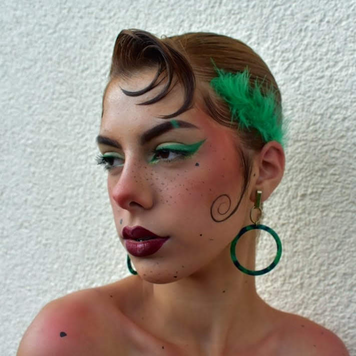
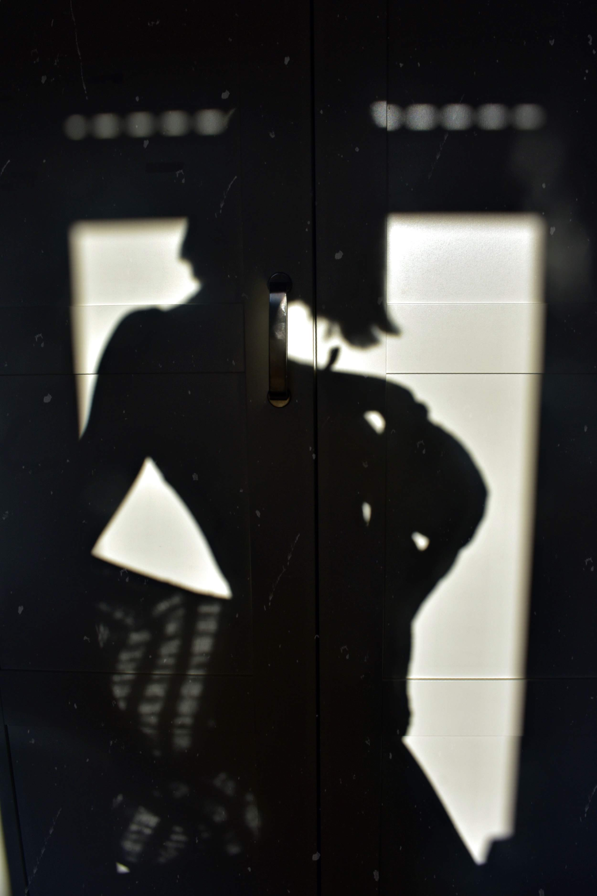
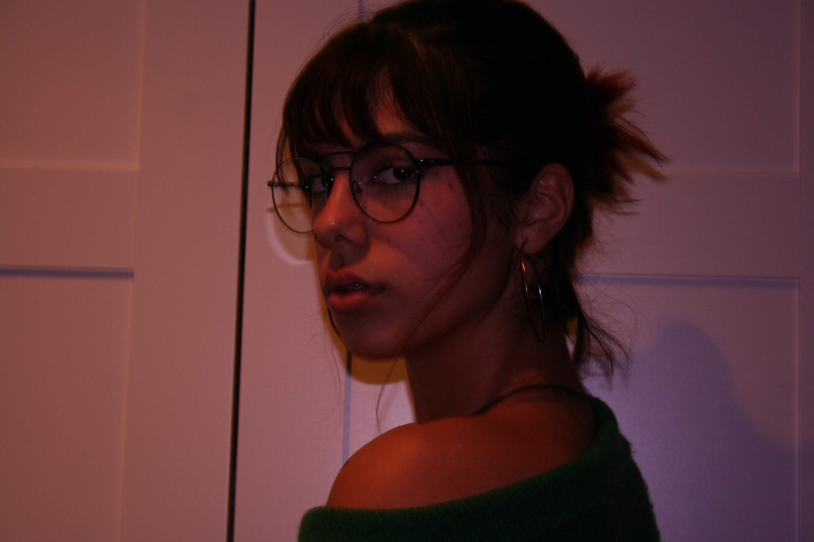

Manuela

Representando mi lado mas loco pero fashion, divertido pero presumido y sobre todo coqueta y alegre, tenemos a Manuela. Esta muy inspirada en mujeres de mi pueblo, de mi ciudad y de mi tierra. Mujeres fuertes, siempre sonrientes, como se dice en mi tierra "mu echá palante". Espero que os guste y la disfruteis lo que yo he hecho.
Publicado el 22/04/2020
Dreamland

Y volví a caer en la hermosa mentira de ese maldito “siempre seremos”
Publicado el 04/04/2020
Cálido inviernos

En esta sesion de fotos en mi cuarto con @adriana en puro invierno, nos lo pasamos muy bien jugando con distintas iluminaciones, colores y ángulos. Esta foto en particular me enamoró. Es natural, estable y con una mirada progunda. Además de los colores cálidos y un primer plano que la hacen intima al mismo tiempo que desafiante. Nos gustaron tanto los colores, contrastes e iluminación de la foto que decidimos que esta no iba a ser retocada.
Publicado el 23/01/2020